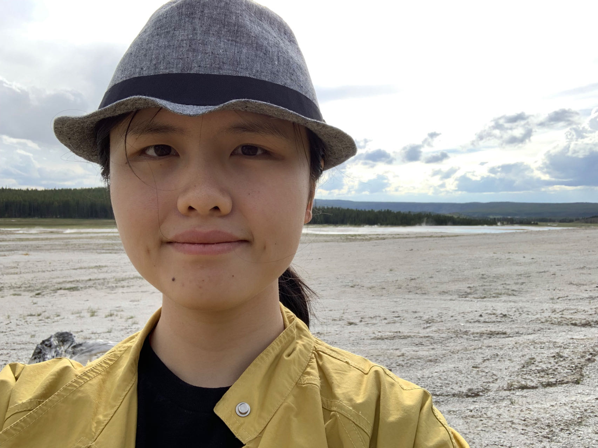

|
 |
Yumeng Liu （刘雨萌）
Postdoctoral Researcher
|
I am currently a postdoctoral researcher at the Graphics&Geometric Computing Laboratory, University of Science and Technology of China (USTC), collaborating with Prof. Ligang Liu. I completed my Ph.D. in Computer Science at the University of Hong Kong, where I was grateful to be supervised by Prof. Wenping Wang and Prof. Taku Komura. I also had the opportunity to collaborate closely with Prof. Yuexin Ma and work under her guidance in 4DVLab at ShanghaiTech University. Prior to this, I received a B.Sc. degree from School of the Gifted Young, the University of Science and Technology of China with the speciality of Computational Mathematics.
I am currently exploring the following research directions:
I am interested in advancing 3D/4D modeling for interactive behaviors and scenes, using these data to develop imitation learning and skill transfer methods for robots, and providing high-fidelity scene modeling to improve autonomous driving system. Ultimately, I aim to bring embodied AI closer to human-level intelligence in real-world environments.
I have served as a reviewer for the following journals and conferences:
Journals:
Conferences: